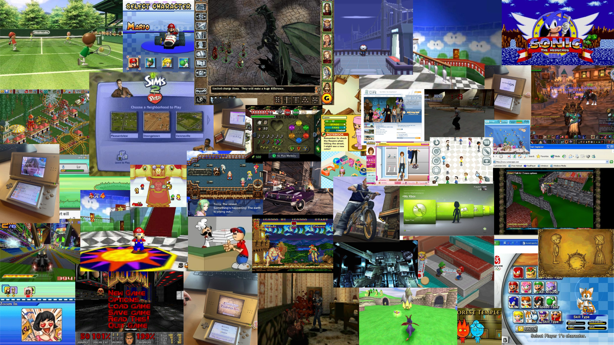

class: center, middle <!-- In deze textarea kan je in Markdown de slides aanpassen, zie https://github.com/gnab/remark/wiki voor alle mogelijkheden! --> # Lau's digital garden inspo :D De vibes die ik beetje wil hebben, hopelijk gaat dit lukken... --- # Agenda 1. Het idee in grote lijnen 2. de 10 links 3. Ziek veel afbeeldingen 5. Beetje meer over waarom dit idee. --- # Onderwerp Retro games! Mee opgegroeid, speel ze nog steeds, 'boom' in recente jaren. ??? Wat is jouw interesse, waarom, wat, hoe (cultuur, vakmanschap, sport, idool, hobby, passie categorie enz.) toon een hoeveelheid afbeeldingen. --- # 10 links de 10 (...11) links: * https://www.youtube.com/watch?v=gQCGJikppNU * https://www.implicitconversions.com/blog/the-psychology-of-nostalgia-in-retro-gaming * https://ambigamingcorner.com/2019/06/12/nostalgia-1/ * https://from.ncl.ac.uk/nostalgia-in-retro-gaming * https://scanlines.substack.com/p/the-best-retro-games-from-every-year * https://www.psychologyofgames.com/2010/11/why-we-get-nostalgic-about-good-old-games/ * https://www.youtube.com/watch?v=m9iv0bL9aeo * https://www.youtube.com/watch?v=-tNvoDw7Pq4 * https://stuyspec.com/article/the-importance-of-physical-media * https://www.popsci.com/diy/buy-physical-copies-video-games/ * https://retrogamestart.com/answers/why-retro-video-gaming-so-popular-its-much-more-than-nostalgia ??? Nostalgie speelt een hele grote rol in waarom retro gaming een boom ervaart, mensen halen herinneringen op en denken terug aan een simpelere tijd de nostalgie werkt ook als een comfort factor, door stress van het dagelijkse leven eventjes af te nemen en weer terug te gaan naar vroeger. veel retro games zijn ook alleen fysieke media (als we pirating/emulators even vergeten), waardoor er nog een soort nostalgie factor aan verbonden kan worden. ook omdat ze fysieke media zijn en niet een key die je krijgt, en vervolgends weer die launcher moet updaten en weer in moet loggen. hebben retro spellen simpelere start requirements (letterlijk plug n play), waardoor mensen ook liever daarnaar 'grijpen' dan een moderne game. --- # Zoek 50 afbeeldingen <p></p> ??? Waarom kies je specifiek voor deze verzameling? Zijn er patronen te ontdekken? Heeft alles een specifieke kleurstelling? Herken je een actie, een gevoel, een materiaal of een standpunt? Wat is kenmerkend voor deze verzameling? Welke dingen komen steeds terug? --- <!-- Slide zonder titel! --> Hieronder een voorbeeld voor het opnemen van een afbeelding. Het is iets lastiger om met Remarkjs een heleboel afbeeldingen op één slide op te nemen, je hebt daar veel custom CSS voor nodig. Een handige workaround is om in een fotobewerkingsprogramma een aantal collages van de door jou gevonden afbeeldingen te maken en die op te nemen als afbeelding op de slide... [placeholder image](./placeholder.svg)] --- background-image: url(./placeholder.svg) ... of als [background image](https://github.com/gnab/remark/wiki/Markdown#background-image) voor een slide. --- # Introtekst Wat wil je een ander vertellen over je onderwerp Hoe denk je dit te vertellen met eigen content? en met overige content zoals (links, afbeeldingen, tekst) Schrijf een eerste stukje content als basis voor je garden (maximaal 180 tekens). <!-- Laat onderstaande staan anders breekt je presentatie -->